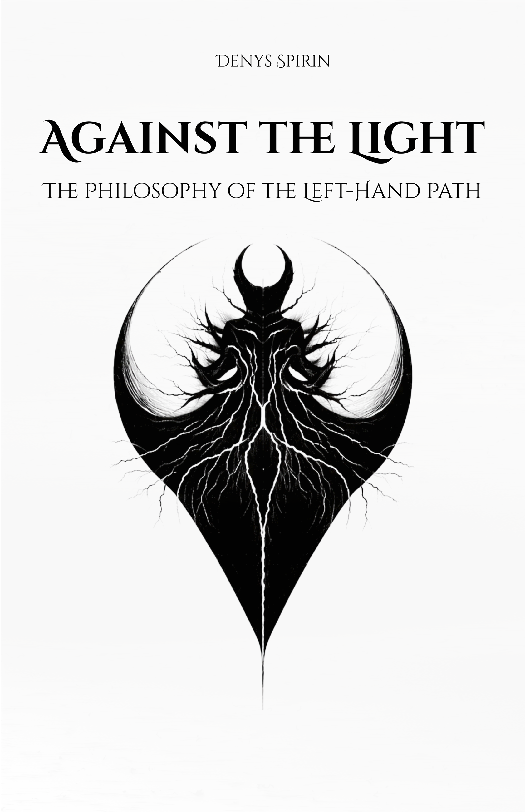

Volume I
Against the Light: The Philosophy of the Left-Hand Path
This book presents a philosophical foundation for the Left-Hand Path. It argues that most systems — religious and secular — encourage you to give up your individuality for the sake of a "greater whole." The book rejects this surrender. It advocates for sovereignty: the choice to keep your own authority rather than delegating it to God or society. It explains why remaining a separate, independent self is a necessary burden rather than a problem to be fixed.